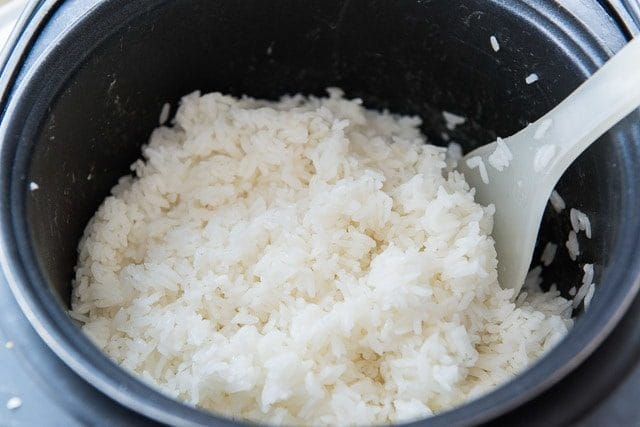

Sushi Rice

Ingredients
- 1,5 cups sushi rice (Nishiki)
- 2 cups filtered water
- 1/4 cup seasoned rice vinegar (Marukan)
Steps
- Place the rice and water into a rice cooker. Cook the rice according to the "white rice" setting on the rice cooker.
- When the rice has finished cooking, evenly pour the seasoned rice vinegar all over the rice. Toss the rice around to further distribute the rice vinegar, taking care to be gentle, and not mash the rice.
- It is now ready to be used for sushi.